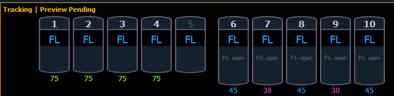

Preview Mode in Live
A {Preview} softkey is available when in Live Summary.
Note: {Preview} is not available in Live Table.
{Preview} allows you to display the intensity values for another cue under the current values in the Live Summary tab. An indicator of what Preview mode you are in will display in the upper left hand corner of the Live Summary display.

In {Preview} mode, the following softkeys are available:
- {Previous} - previews the last cue run from the selected cue list.
- {Pending} - previews the pending cue from the selected cue list.
The following examples show other functions that are available in Preview:
- {Preview}[Next] will allow you to preview the cue higher than the one currently selected. If there is no cue already selected in preview mode, [Next] will behave the same as {Pending}.
- {Preview}[Last] will allow you to preview the cue lower than the one currently selected. If there is no cue already selected in preview mode, [Last] will behave the same as {Previous}.
- {Preview}<Cue>[5] will preview cue 5.